Releasenotes eBlinqx Hypotheekadvies – Januari 2026
📢 De onderstaande tickets zijn op 29 januari 2026 live gegaan:
Video: IT-29354: Meer stabiliteit door berekend veld voor eigen geld van de aanvrager
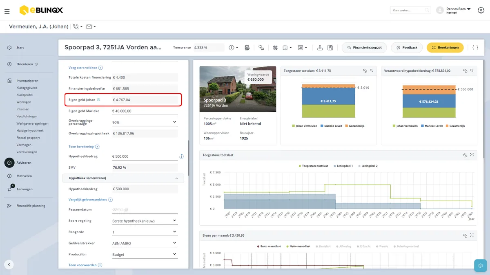
⚙️ IT-29354: Meer stabiliteit door berekend veld voor eigen geld van de aanvrager
Tijdens de aankomende release voeren we een tijdelijke verbetering door die zorgt voor extra stabiliteit in jouw adviesproces. Het veld eigen geld van de aanvrager wordt tijdelijk een berekend veld en is daarmee niet handmatig aanpasbaar. Dit voorkomt dat berekeningen kunnen vastlopen en zorgt ervoor dat je zonder onderbrekingen kunt blijven werken. Met deze oplossing krijgt het Fastlane Team de ruimte om te werken aan een robuuste, structurele verbetering. Het mooie vooruitzicht: straks ligt de regie weer volledig bij jou en kun je het eigen geld opnieuw handmatig invoeren. We verwachten de definitieve oplossing op donderdag 5 februari te lanceren. Is het eerder klaar, dan profiteer je uiteraard meteen.
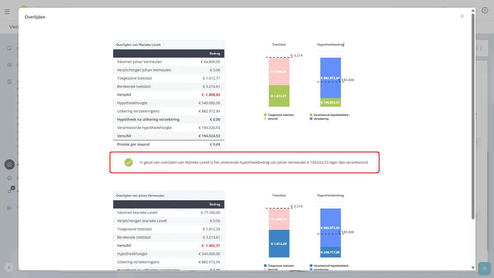
⚙️ IT-29117: Duidelijkere tekst bij life event Overlijden binnen GHF
Bij het adviseren van het life event ‘Overlijden’ binnen de adviesmethodiek GHF is de toelichting in de verdiepende schermen en in de output verduidelijkt. Wanneer er al een lopende overlijdensrisicoverzekering is en of als het verschil positief uitvalt, tonen we nu alleen de relevante en begrijpelijke boodschap over het resterende hypotheekbedrag. Zo voorkom je verwarring en kun je de situatie helder en eenduidig toelichten aan jouw klant.
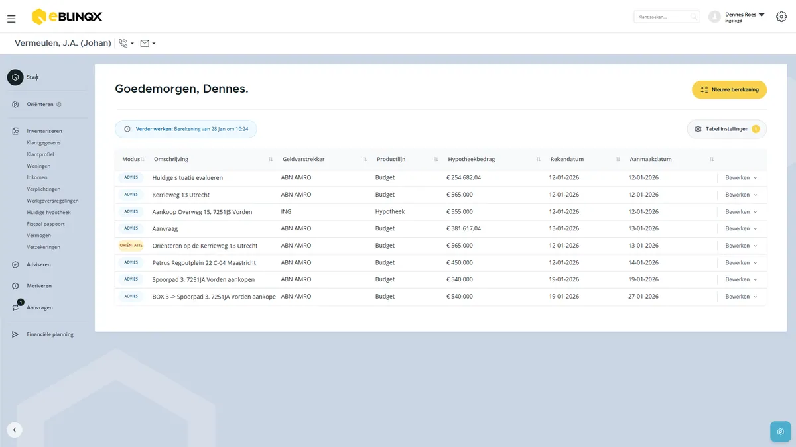
⚙️ IT-29314: Snellere redirect van Elements naar het juiste klantdossier in eBlinqx Hypotheekadvies
Klik je in Elements | Eblinqx op de knop ‘Fastlane’? Dan kom je in eBlinqx Hypotheekadvies nu direct uit op het startscherm van het klantdossier in plaats van in de klantgegevens. Zo zit je meteen op de juiste plek om verder te werken en bespaar je onnodige klikken.
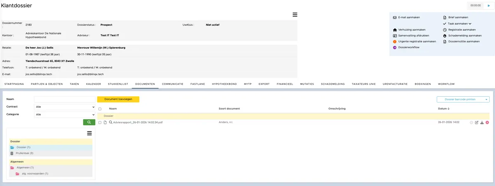
🆕 IT-26960: Adviesrapport automatisch meesturen met AX-bericht naar Elements
Vanaf nu kan Blinqx ervoor zorgen dat bij het versturen van het AX-bericht automatisch ook het volledige adviesrapport wordt meegestuurd naar Elements. Zo staat je adviesrapport direct in Elements, bespaar je tijd en hoef je het rapport niet langer handmatig te uploaden.
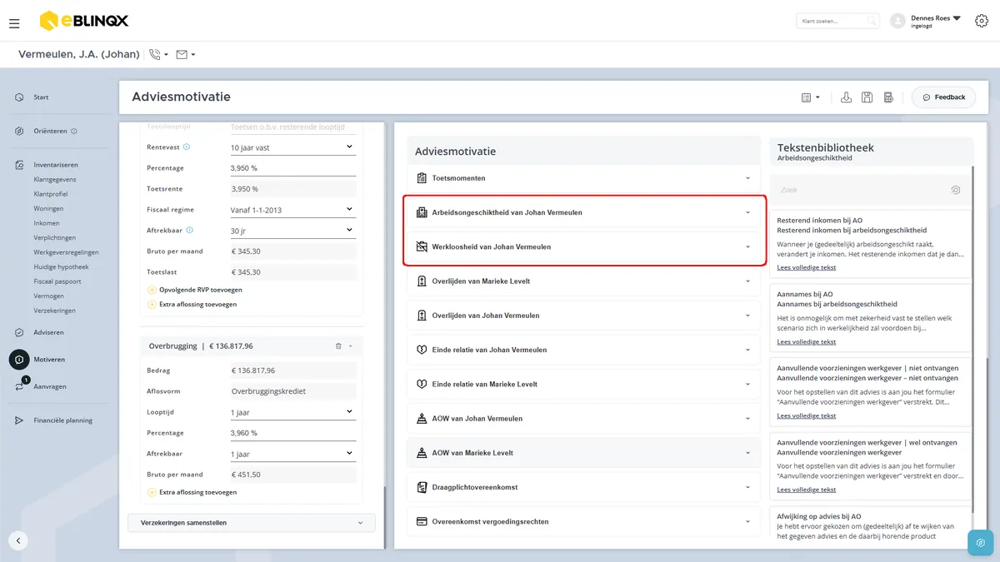
⚙️ IT-28927: Slimmere weergave van AO- en WW-onderdelen
Je ziet nu alleen informatie over arbeidsongeschiktheid en werkloosheid wanneer deze écht relevant is. Heeft de (mede) aanvrager geen inkomen uit tegenwoordige arbeid, dan worden de onderdelen arbeidsongeschiktheid en werkloosheid automatisch weggelaten uit de applicatie, adviesmotivering en het rapport. Zo blijft jouw advies helder, inhoudelijk correct en bespaar je tijd op handmatige aanpassingen.
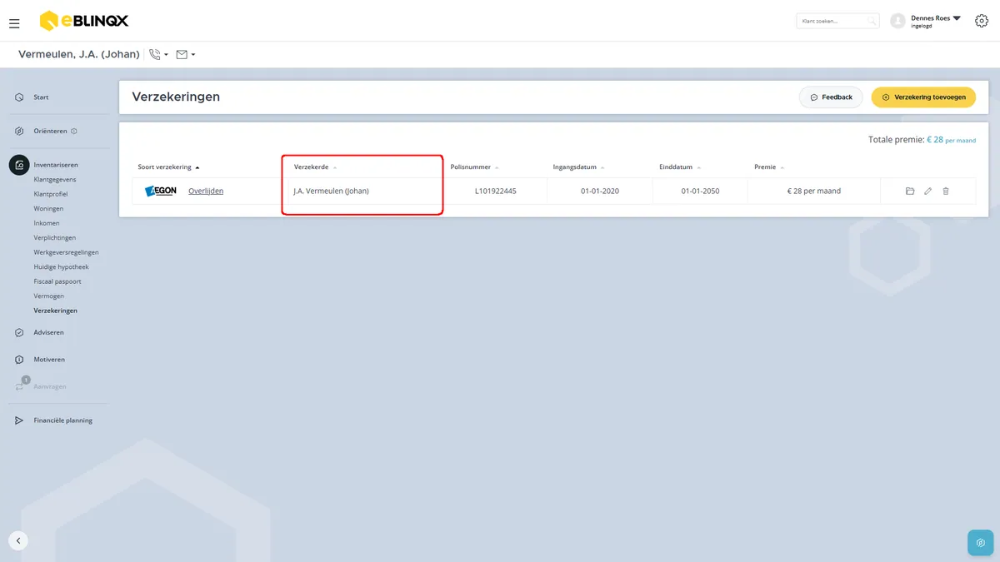
⚙️ IT-29236: Inzicht in verzekerde direct zichtbaar bij Verzekeringen
Op de verzamelpagina 'Verzekeringen' zie je nu in één oogopslag wie de verzekerde is per verzekering. Dit betekent dat je minder hoeft te klikken en sneller overzicht hebt tijdens de inventarisatie, waardoor je efficiënter kunt werken en direct de juiste context hebt bij elke verzekering.
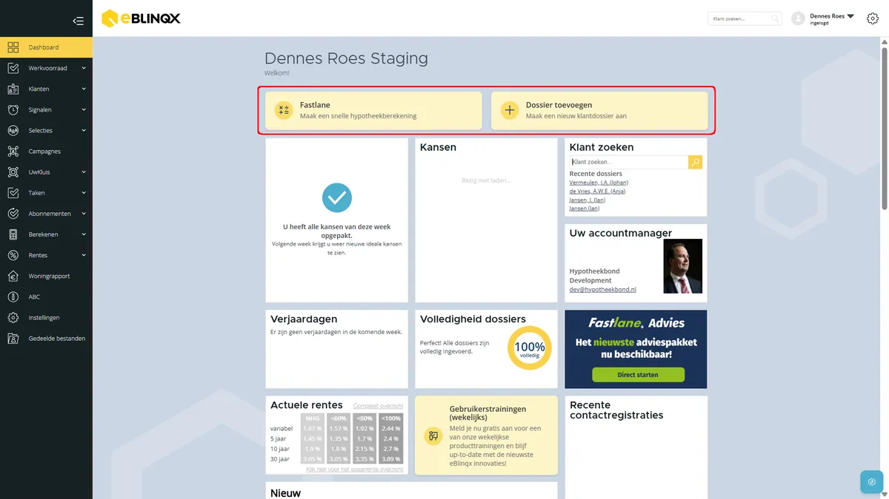
🆕 IT-29260: Knoppen “Fastlane” en “Dossier toevoegen” altijd zichtbaar in je dashboard
Vanaf nu zie je in je dashboard altijd de knoppen “Fastlane” en “Dossier toevoegen”, ongeacht of de light-module aan of uit staat. Zo kun je sneller schakelen en direct een nieuw dossier toevoegen zonder afhankelijk te zijn van je module-instelling.
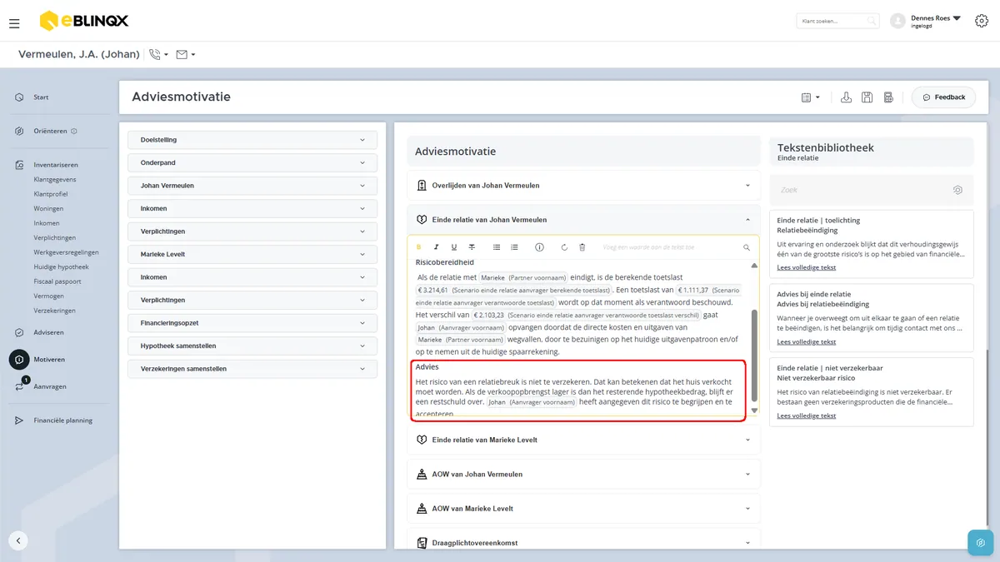
⚙️ IT-29210: Duidelijker gestructureerde tekst bij ‘Einde relatie’ in GHF-advies
Binnen de GHF-adviesmethodiek is het onderdeel Einde relatie nu overzichtelijker opgebouwd. Het gegenereerde tekstblok is opgesplitst, waarbij een aparte alinea met de titel Advies is toegevoegd. Zo maak je een helder onderscheid tussen de feitelijke situatie en jouw advies, sluit de motivatie beter aan op de GHF-richtlijnen en presenteer je jouw advies duidelijker en professioneler aan de klant.
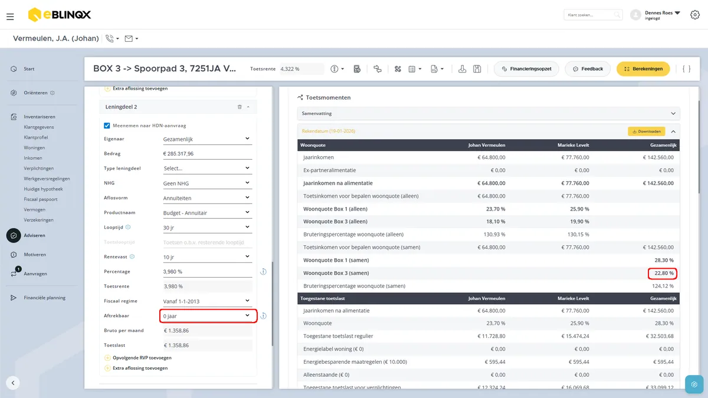
⚙️ IT-28121: Juiste toepassing van financieringslastpercentages bij volledige Box 3-hypotheken
Wanneer de rente van de volledige hypotheek niet aftrekbaar is, past eBlinqx Hypotheekadvies nu automatisch de juiste Box 3-financieringslastpercentages toe. De reguliere toetslast wordt daarbij niet meer gebruteerd, zodat jouw klant niet onnodig wordt benadeeld. Dit zorgt voor een correctere berekening van de maximale hypotheek en voorkomt onjuiste verwachtingen. Zo kun je met nog meer vertrouwen en nauwkeurigheid adviseren, ook in situaties met niet-aftrekbare rente.
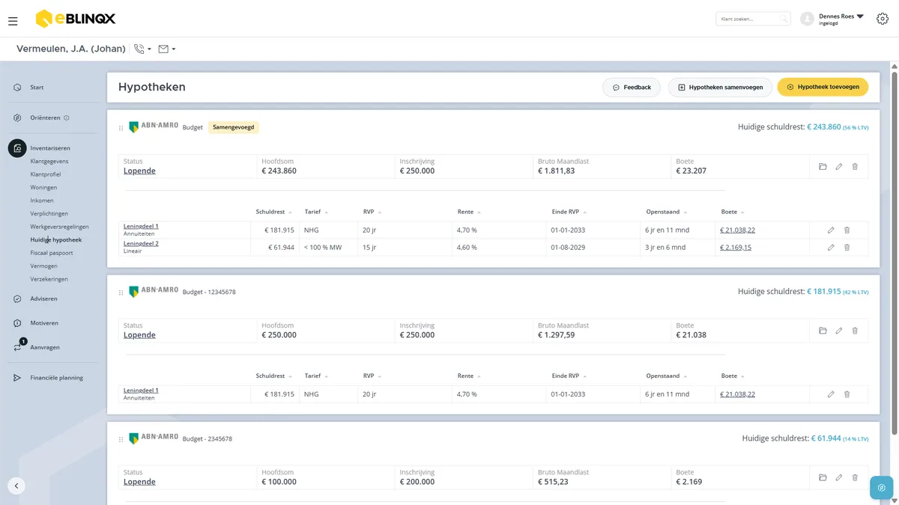
🐞 IT-29241: Correcte berekening en duidelijke herkenning van samengevoegde hypotheken
Bij het samenvoegen van meerdere hypotheken wordt de hypotheeksom nu weer correct berekend, zodat de overbruggingshypotheek altijd de juiste hoogte heeft. Daarnaast is de samengevoegde hypotheek voorzien van het label lopende hypotheken, waardoor je deze direct herkent. Zo werk je met meer zekerheid en overzicht in jouw adviestraject.
📢 De onderstaande tickets zijn op 22 januari 2026 live gegaan:
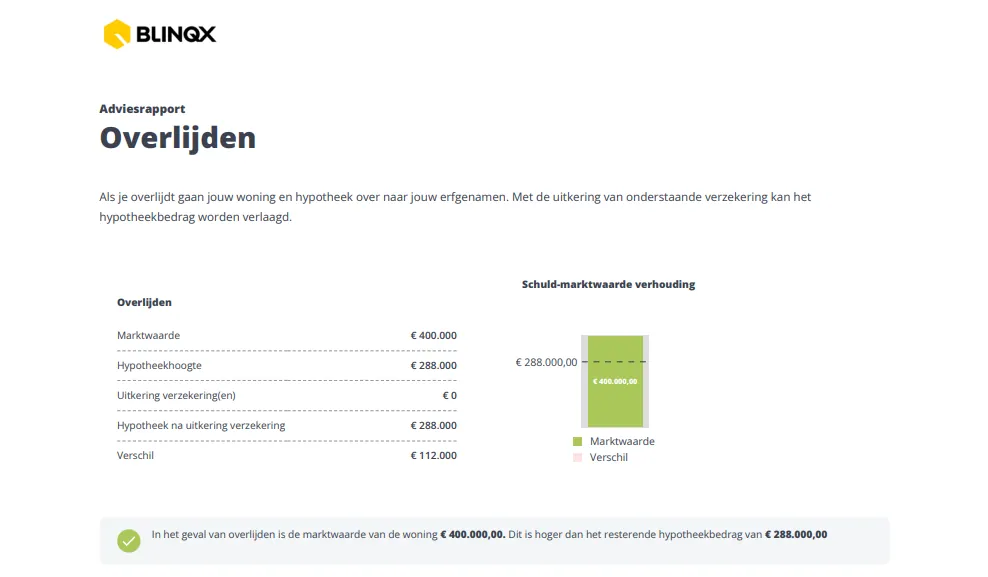
🐞 IT-29119: Adviesrapport nu compleet bij life event Overlijden (CBI)
Bij het adviseren van een alleenstaande op basis van de CBI-methodiek wordt het hoofdstuk ‘Overlijden’ nu correct opgenomen in het adviesrapport. Hierdoor sluit het rapport weer volledig aan op jouw advies, de gekozen verzekering en de motivering, zodat je altijd een compleet en professioneel adviesdocument kunt opleveren.
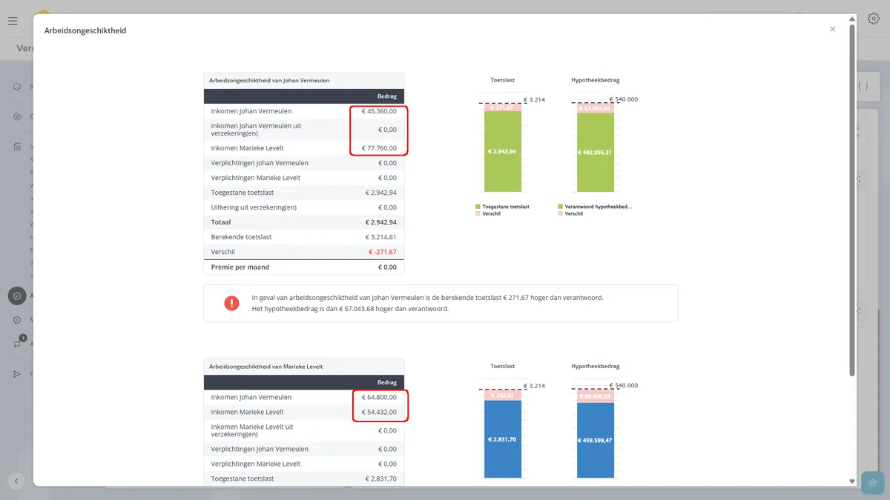
🐞 IT-29159 en IT-23240: AO-inkomen correct verwerkt in AO-scenario
Het AO-inkomen dat je invoert wordt nu altijd correct meegenomen in het arbeidsongeschiktheids-scenario. Hierdoor zie je een betrouwbaar en volledig beeld van de financiële situatie bij AO, ongeacht de volgorde van aanvrager en mede-aanvrager. Dat geeft je meer zekerheid en voorkomt onnodige correcties tijdens je advies.
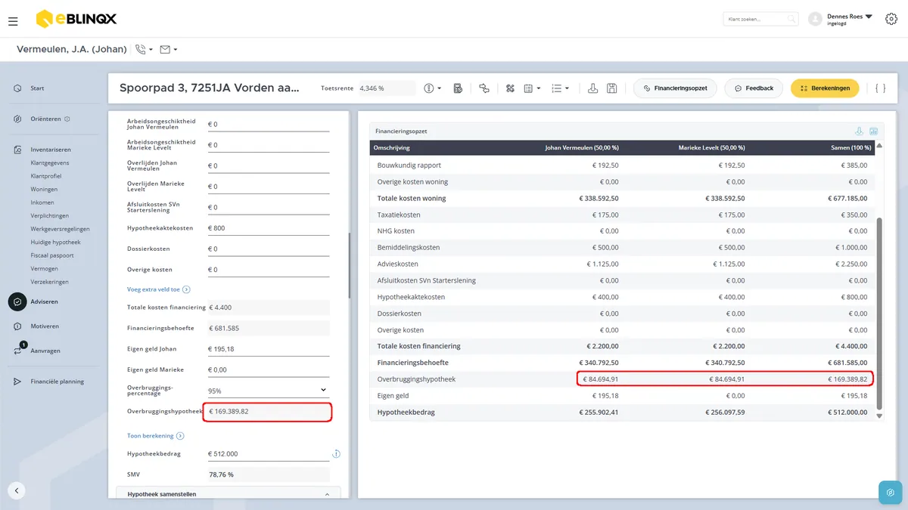
🐞 IT-28705: Draagplicht wordt correct herberekend bij handmatig overbruggingsbedrag
Pas je het te overbruggen bedrag handmatig aan in de financieringsopzet? Dan wordt nu ook de draagplichtverdeling per klant direct en volledig opnieuw berekend. Zo sluiten de bedragen per debiteur altijd netjes aan op het door jou ingevoerde overbruggingsbedrag en de gekozen verdeelsleutel. Dit zorgt voor een kloppende totaalfinanciering én duidelijke, consistente bedragen op klantniveau, ook na opslaan en heropenen van het dossier.
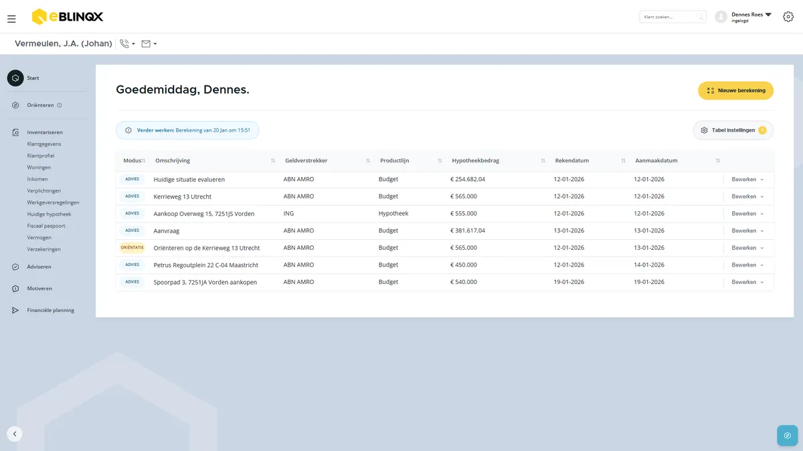
⚙️ IT-29153: Direct naar het nieuwe eBlinqx Hypotheekadvies-startscherm vanuit Portefeuillesignalen
Klik je in database op eBlinqx Hypotheekadvies bij een klant, dan kom je nu meteen uit op jouw nieuwe eBlinqx Hypotheekadvies-startscherm. Dat maakt starten in de nieuwe omgeving sneller en voorkomt onnodig doorklikken.
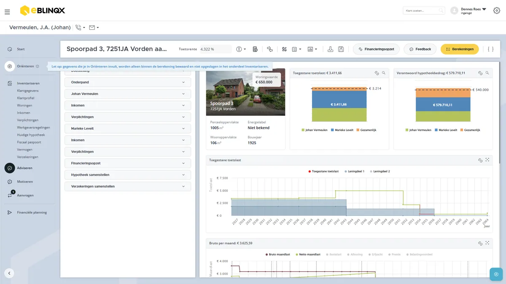
⚙️ IT-29157: Duidelijke toelichting bij processtap Oriënteren
Bij de processtap Oriënteren zie je nu een handig informatie-icoon. Door hier met je muis overheen te gaan, krijg je direct inzicht in wat er met de ingevoerde gegevens gebeurt. Zo weet je precies dat deze informatie alleen binnen de berekening wordt gebruikt en niet wordt opgeslagen in Inventariseren, wat zorgt voor meer duidelijkheid en vertrouwen tijdens het adviseren.
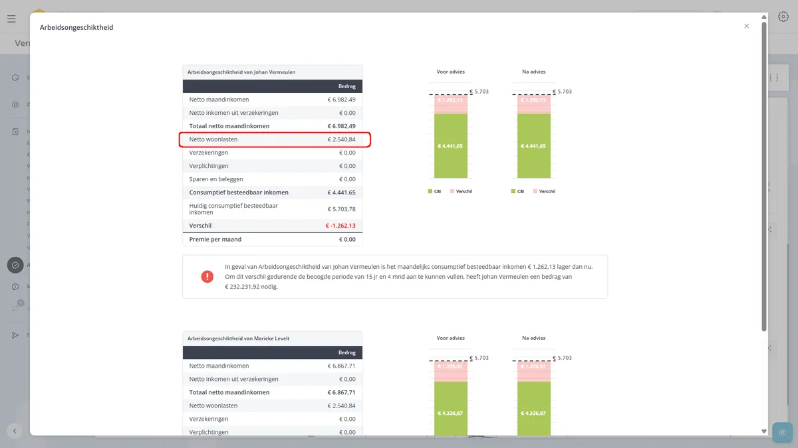
⚙️ IT-28827: Duidelijkere CBI-terugval bij life events
Bij life events tonen we nu een CBI-terugval die beter aansluit op de adviespraktijk. De lasten van een eventuele overbruggingshypotheek worden niet langer meegenomen in deze vergelijking. Zo kun je de inkomensverandering eenvoudiger uitleggen en voorkom je verwarring bij jouw klant, terwijl de berekening helder en logisch blijft.
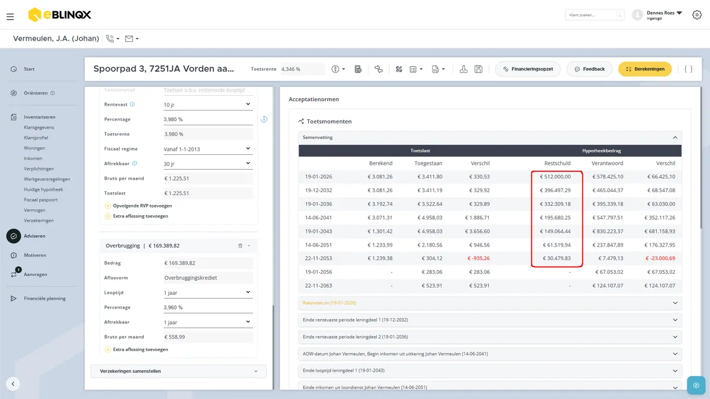
🐞 IT-28827: Overbruggingshypotheek blijft volledig buiten pro-resto en toetsmomenten
Werk je met een klant die een overbruggingshypotheek heeft? Dan wordt deze nu nergens meer onbedoeld meegenomen in de restschuld-, pro-resto- of toetslastberekeningen op toetsmomenten. Hierdoor voorkom je onverwachte (en onjuiste) sprongen in de hypotheekschuld en kun je rekenen op een stabiele, kloppende schuldontwikkeling in je advies en PDF-uitvoer.
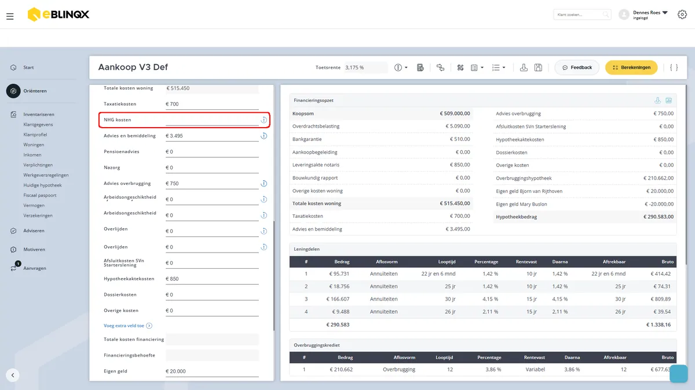
🐞 IT-29223: Stabielere berekening bij leeg NHG-kosten veld
Je kunt het veld NHG-kosten nu volledig leegmaken zonder dat de berekening vastloopt. eBlinqx Hypotheekadvies blijft op de achtergrond automatisch rekenen met een geldige waarde, zodat jij ongestoord en betrouwbaar kunt blijven adviseren. Dit zorgt voor een soepelere invoer en voorkomt onverwachte rekenproblemen tijdens je adviesgesprek.
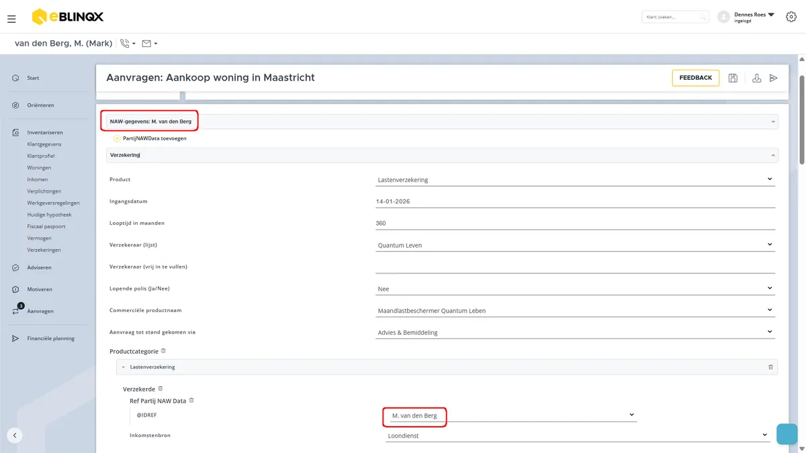
🐞 IT-23406, IT-23414 & IT-28561: Correcte koppeling van verzekerde en verzekeringnemer bij HDN-woonlastenverzekeringen
Bij aanvragen voor AO-, AO/WW- en woonlastenverzekeringen zorgen we nu dat altijd de juiste persoon wordt gebruikt als verzekerde én verzekeringnemer. Alleen de relevante klantgegevens worden nog getoond, partnergegevens verschijnen niet meer onterecht en verzekerde en verzekeringnemer worden automatisch gelijk getrokken waar dat hoort. Zo klopt je HDN-aanvraag direct, hoef je niets meer handmatig aan te passen en kun jij sneller en met meer vertrouwen door in eBlinqx Hypotheekadvies.
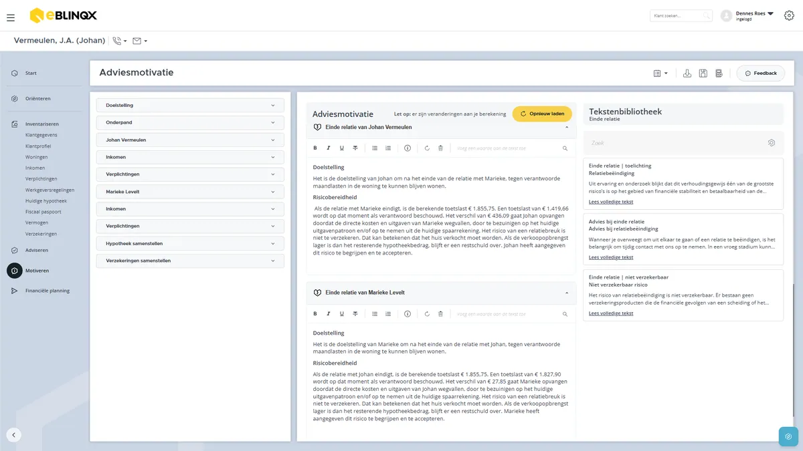
🐞 IT-27814: Consistente GHF-rapportage bij scenario einde relatie
Bij het scenario einde relatie binnen de GHF-rapportage wordt de toelichting nu voor beide aanvragers op dezelfde volledige en duidelijke manier opgebouwd. Zowel jij als adviseur als je klant zien nu per aanvrager een gelijkwaardige tekst met doelstelling, risicobereidheid, uitleg van de toetslasten en een heldere toelichting op de opvang van verschillen en risico’s. Dit bespaart je handmatig aanpaswerk en zorgt voor een professionele, consistente basisrapportage waar je direct op kunt vertrouwen.
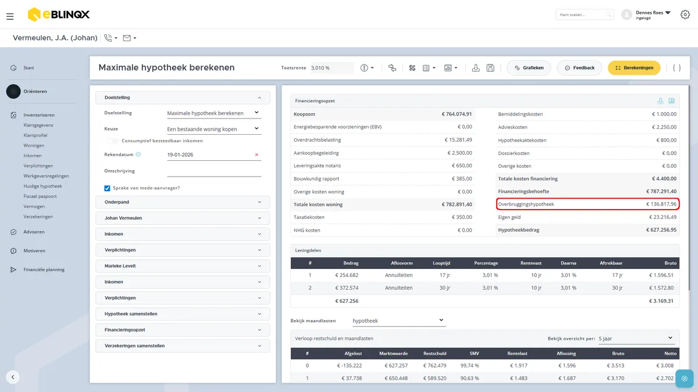
🐞 IT-29165: Overbruggingshypotheek correct zichtbaar in financieringsopzet
Bij de doelstelling Maximale hypotheek berekenen zie je nu ook bij bestaande klanten met een lopende hypotheek de overbruggingshypotheek netjes terug in de financieringsopzet, zowel in het resultatenpaneel als in de PDF. Zo heb je direct een volledig en betrouwbaar overzicht voor jouw advies, zonder verrassingen achteraf.
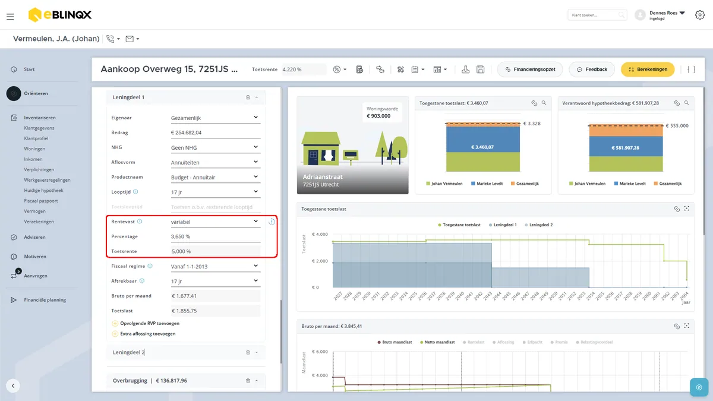
🐞 IT-29116: Variabele rente ABN AMRO wordt nu altijd correct opgehaald
Wanneer je in de berekening rentevast = variabel kiest, haalt eBlinqx Hypotheekadvies voortaan het juiste variabele rentepercentage op (in plaats van het tarief van 1 jaar vast). Ook zorgen we dat de tarieven voor 1 jaar en 1 jaar + 1 maand niet onbedoeld gelijk zijn, zodat je altijd een kloppende en consistente rente ziet voor jouw advies en richting je klant.
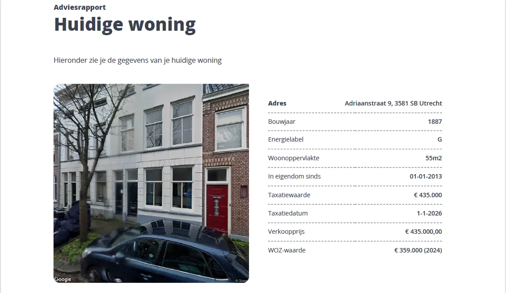
🐞 IT-28245: Huidige woning correct opgenomen in adviesrapport
Het onderdeel Huidige woning wordt nu altijd netjes weergegeven in het adviesrapport wanneer je deze optie selecteert. Ook bij het zelf samenstellen van het rapport zie je voortaan direct de ingevoerde woninggegevens terug, zonder foutmeldingen. Zo kun je erop vertrouwen dat jouw inventarisatie volledig en duidelijk wordt gepresenteerd aan de klant.
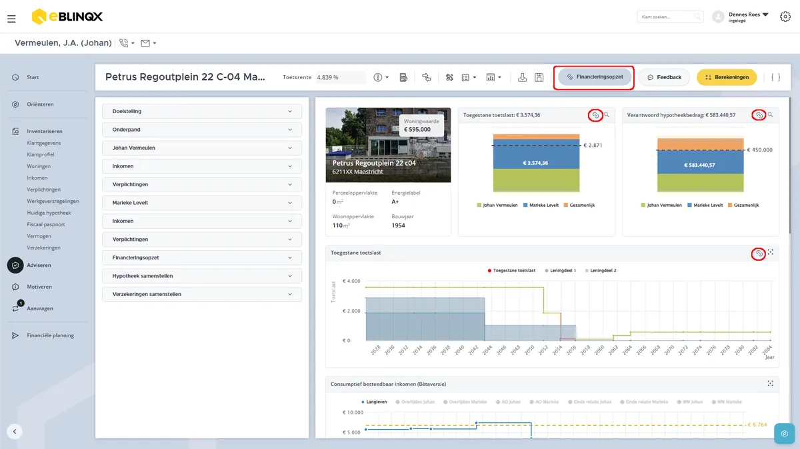
⚙️ IT-28015: Direct doorklikken vanuit grafieken naar berekeningsdetails
Je krijgt nu nog sneller inzicht in de achterliggende berekeningen. Vanuit de staafdiagrammen klik je direct door naar de bijbehorende berekeningsdetails, zoals de financieringsopzet, het gebruikte toetsinkomen, eventuele correcties en toegepaste verruimingen. Dit sluit aan op de werkwijze die je al kent en zorgt voor minder doorkliks, snellere navigatie en een consistente, efficiënte gebruikerservaring.
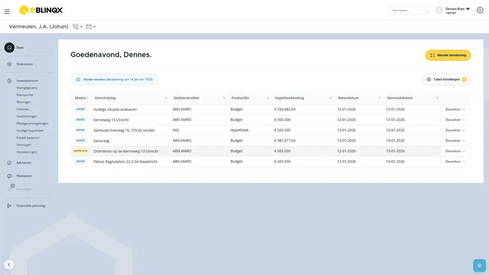
⚙️ IT-29136: Soepelere oriëntatieflow in eBlinqx Hypotheekadvies
Je werkt voortaan nog prettiger in eBlinqx Hypotheekadvies. Wanneer je een bestaande oriëntatieberekening opent vanaf het startscherm, blijf je nu in de vertrouwde eBlinqx Hypotheekadvies-omgeving met de huidige menustructuur. Daarnaast staat de optie ‘Gegevens opslaan in dossier’ standaard aan bij het starten van een oriëntatieberekening, zodat belangrijke gegevens automatisch worden vastgelegd. Dit bespaart je tijd en zorgt voor een consistente, zorgeloze workflow.
📢 De onderstaande tickets zijn op 15 januari 2026 live gegaan:
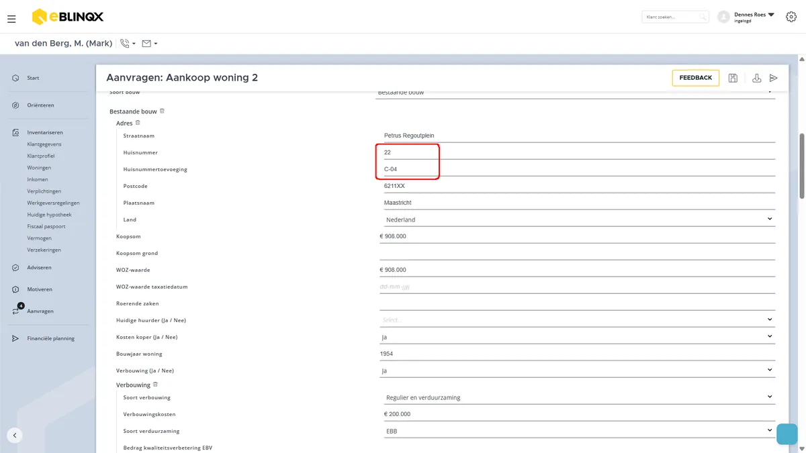
🐞 IT-29100: Huisnummertoevoeging van onderpand worden nu wél correct overgenomen
Bij het aanmaken of verzenden van een HDN-aanvraag nemen we de straatnaam en plaatsnaam van de nieuwe woning nu altijd goed mee vanuit de berekening, óók wanneer er een huisnummertoevoeging aanwezig is (zoals “c-04”). Hierdoor staan de adresvelden in het HDN-formulier direct correct gevuld en hoef jij niets meer handmatig aan te passen, wat je tijd scheelt en de kans op afwijzing door incomplete adresgegevens verkleint.
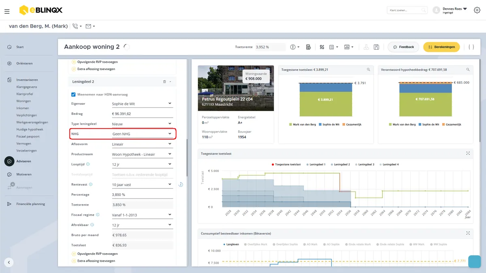
🐞 IT-28576: NHG-registratie per leningdeel nu altijd correct meegenomen
Bij het samenstellen van een hypotheek zorgen we er nu voor dat een lege NHG-keuze niet meer kan leiden tot een onjuiste vermelding in de PDF. Als NHG niet is ingevuld, wordt dit automatisch behandeld als niet van toepassing, zodat er in de leningdeel-download nooit meer ten onrechte “gedekt door NHG” verschijnt. Hierdoor kun jij erop vertrouwen dat je berekening én PDF’s altijd netjes overeenkomen, zonder extra handmatige stappen.
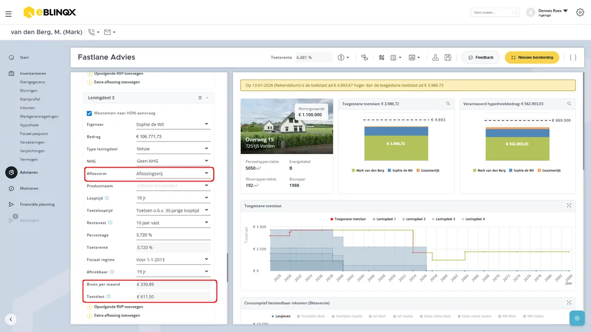
🐞 IT-28737: Correcte bruto toetslast en toetsrente voor aflossingsvrije Lloyds-leningdelen
Voor Lloyds berekent eBlinqx Hypotheekadvies nu de toetslast van elk aflossingsvrij leningdeel altijd volledig bruto (alsof hypotheekrente niet aftrekbaar is) en kiest automatisch de juiste toetsrente op basis van de resterende rentevastperiode: bij ≥ 10 jaar gebruiken we de offerterente, en bij < 10 jaar toetsen we met 5,000%. Hierdoor sluiten de maximale verstrekking, LTV-toetsing en haalbaarheid direct beter aan op de Lloyds-richtlijnen, en zie je in de uitlevering duidelijk welke toetsrente, bruto-factor en resterende rentevastperiode zijn toegepast.
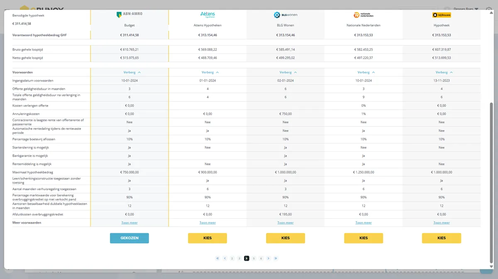
⚙️ IT-29128: Hypotheekvoorwaarden weer beschikbaar voor alle kantoren
De voorwaarden uit de Fastlane Rente Adminisratie worden nu weer voor alle kantoren getoond in eBlinqx Hypotheekadvies. Zo heb je altijd direct inzicht in de actuele voorwaarden tijdens je adviesproces en werk je sneller en consistenter, zonder extra handelingen.
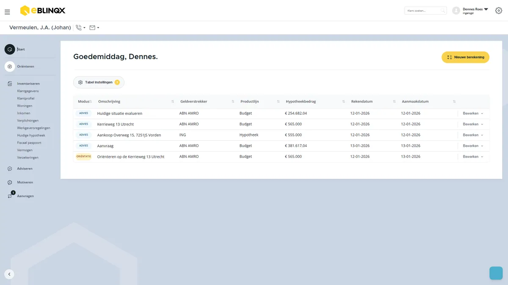
🆕 IT-27910: Fastlane Oriëntatie en Fastlane Advies geïntegreerd in één krachtig eBlinqx Hypotheekadvies-proces
Vanaf vandaag is Fastlane Oriëntatie een vaste processtap binnen eBlinqx Hypotheekadvies onder de processtap Oriënteren en werk je niet langer met een aparte module. Alles gaat nu samen verder onder één herkenbare naam: eBlinqx Hypotheekadvies. De gegevens die je invoert tijdens het oriënteren worden direct opgeslagen in de berekening zelf, zodat je snel en eenvoudig berekeningen en simulaties maakt en jouw conversie tijdens het eerste adviesgesprek verhoogt. De processtap Adviseren kenmerkt zich door een dynamische database (inventarisatie) waarin alle feiten worden vastgelegd en verwerkt. Iedere nieuwe berekening wordt automatisch gevoed met deze gegevens, die ook direct worden gebruikt om het HDN-aanvraagformulier in te vullen. Zo werk je consistenter, sneller en met maximaal gemak toe naar een compleet advies.
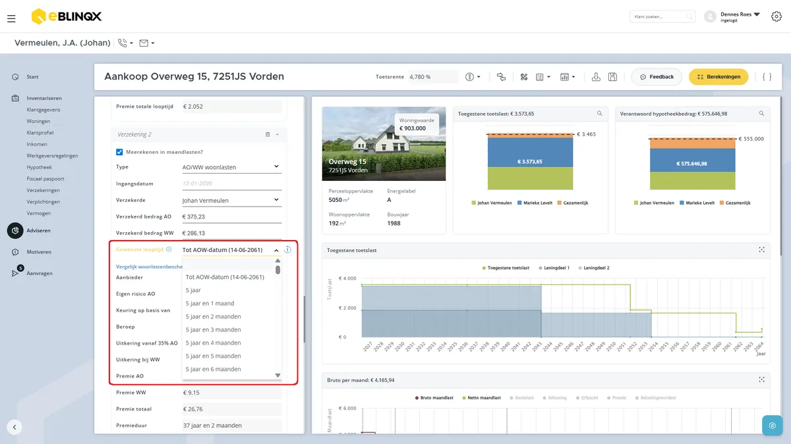
⚙️ IT-28589: Inzichtelijke verzekeringslooptijd met einddatum en AOW-optie
In de verzekeringen-sidebar zie je nu bij het kiezen van een gewenste looptijd direct via een hover de berekende einddatum van de verzekering. Zo weet je in één oogopslag tot wanneer de dekking loopt en kun je sneller de juiste looptijd bepalen. Daarnaast is de dropdown Gewenste looptijd uitgebreid met een handige optie Tot AOW-datum. Met één klik laat je de verzekering automatisch aansluiten op de AOW-datum van de verzekerde, zonder zelf te hoeven rekenen. Dit zorgt voor meer overzicht, minder uitzoekwerk en een nog efficiënter adviesproces.
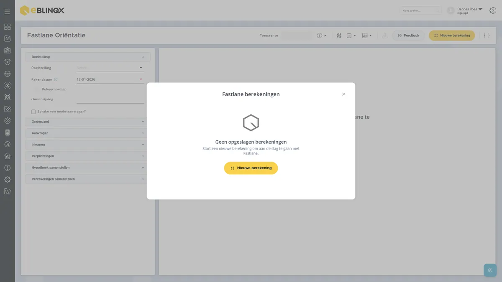
🐞 IT-29105: Starten van een hypotheekberekening zonder dossier hersteld
Je kunt nu weer eenvoudig een nieuwe hypotheekberekening starten zonder eerst een dossier aan te maken. Ideaal voor oriënterende gesprekken, zodat je sneller en flexibeler met je klant kunt schakelen.
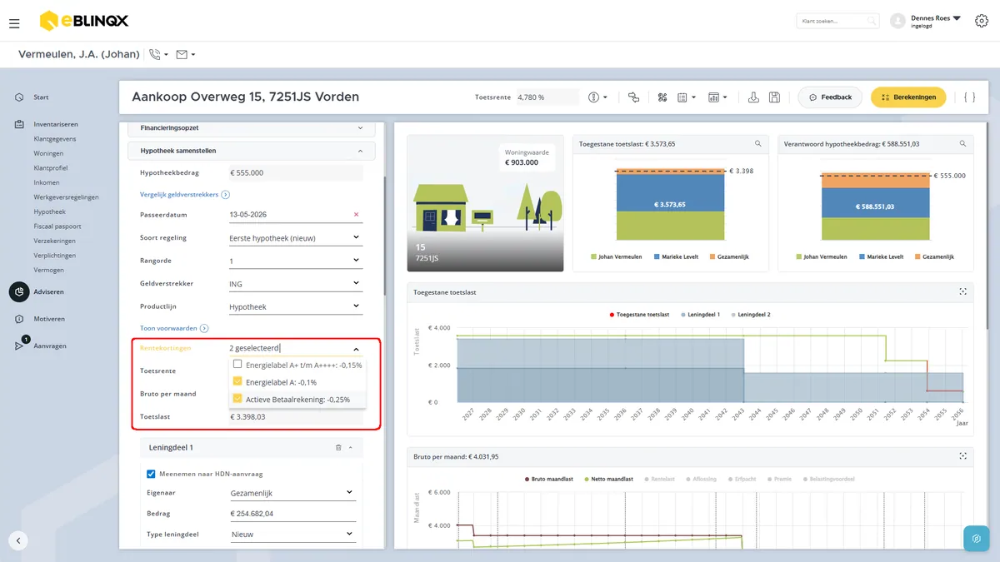
⚙️ IT-28681: Automatische prefill van betaalrekening- en energielabelkorting hersteld
Bij het kiezen van een handelsbank zoals ING, Rabobank of ABN AMRO met de bijbehordende productlijn worden de betaalrekeningkorting en energielabelkorting weer automatisch voor je aangezet. Zo zie je direct de juiste en meest complete renteopbouw zonder extra handelingen. Fijn is ook dat jouw bewuste keuze telt: vink je één of beide kortingen handmatig uit, dan onthoudt eBlinqx Hypotheekadvies dit netjes in het adviesdossier. Bij het opnieuw openen of doorlopen van het advies blijven jouw instellingen behouden en blijven alle berekeningen en validaties correct werken. Dat geeft rust, overzicht en vertrouwen tijdens het adviseren.
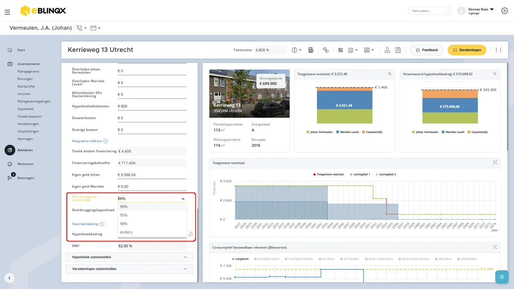
⚙️ IT-28676: Overzichtelijkere dropdown voor hoogte overbruggingshypotheek
In de dropdown ‘Hoogte overbruggingshypotheek’ zie je voortaan niet langer de optie 100%, zodat je alleen nog de keuzes krijgt die in de praktijk écht relevant zijn. Dit maakt je selectie sneller en duidelijker, terwijl de berekeningen en de achterliggende overbruggingsmodule gewoon ongewijzigd blijven werken. Bestaande dossiers waarin eerder 100% is gekozen openen probleemloos en tonen daarbij automatisch een geldige weergave (zoals 98% of als historische waarde), zonder foutmeldingen.
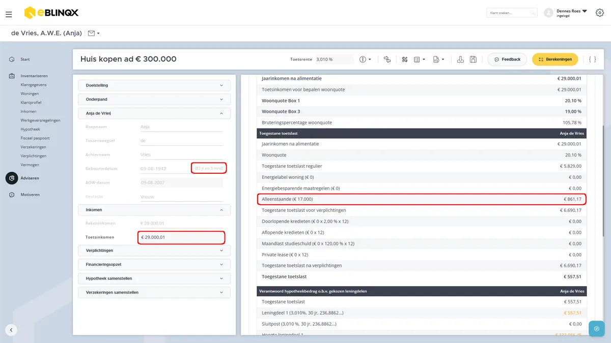
⚙️ IT-29064: Correcte financieringslast voor alleenstaande consumenten
eBlinqx Hypotheekadvies berekent de financieringslast nu nog nauwkeuriger door automatisch rekening te houden met het wettelijk vrij te laten bedrag van € 17.000 voor specifieke groepen alleenstaande consumenten.
- Voor alleenstaande consumenten die de AOW-leeftijd nog niet hebben bereikt en een toetsinkomen boven € 30.000 hebben, wordt dit bedrag automatisch buiten beschouwing gelaten.
- Hetzelfde geldt voor alleenstaande consumenten die de AOW-leeftijd hebben bereikt met een toetsinkomen boven € 29.000.
Deze verbetering is uitsluitend van toepassing op hypothecair krediet voor alleenstaande consumenten. Andere huishoudvormen en inkomenscategorieën blijven ongewijzigd. De berekening is volledig transparant en reproduceerbaar, zodat je altijd inzicht hebt in de onderliggende stappen.
Het resultaat: een correctere en eerlijkere vaststelling van de financieringslast, volledig in lijn met de wettelijke voorwaarden en met maximaal gemak voor jou als adviseur.
📢 De onderstaande tickets zijn op 8 januari 2026 live gegaan:
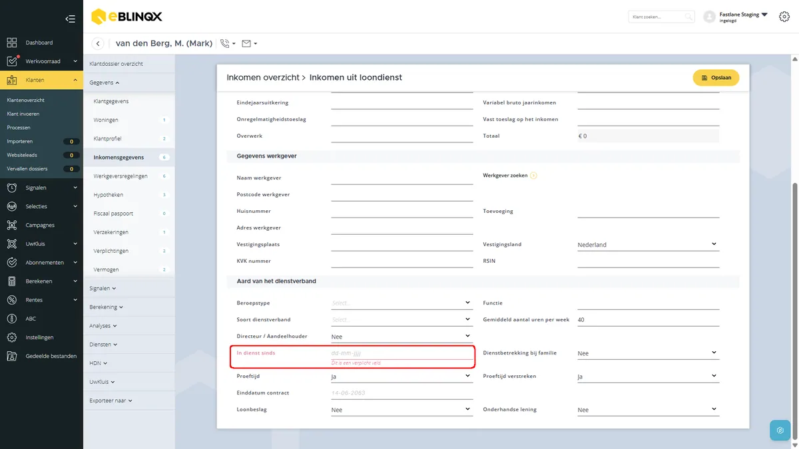
🐞 IT-28864: Betere controle op datum indiensttreding bij HDN-aanvragen
Bij het invoeren van inkomen vullen we de datum indiensttreding niet langer automatisch voor je in. Zo houd je zelf de regie over de juiste datum. Bij het aanmaken van een HDN-aanvraag controleren we nu of deze datum correct is ingevuld voor jou en eventueel de mede-aanvrager. Dit voorkomt afwijkingen met werkgeversverklaringen en loonstroken en helpt je om hypotheekaanvragen sneller en zonder uitval door te laten lopen.
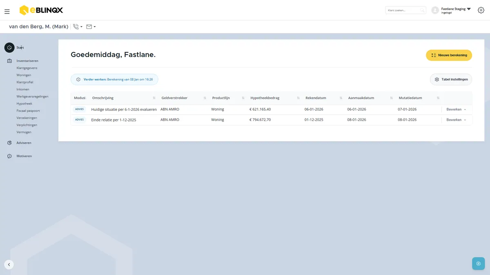
🆕 IT-28876: Nieuwe processtap ‘Start’ voor direct inzicht bij binnenkomst
Bij het openen van Fastlane Advies kom je voortaan direct terecht in de nieuwe processtap Start, bovenaan de menustructuur. Hier krijg je meteen een duidelijk overzicht van alle bestaande berekeningen binnen het dossier, zodat je sneller verder kunt met adviseren. Zijn er nog geen berekeningen? Dan helpt een duidelijke knop 'Nieuwe berekening' je direct op weg. Zo start je elke keer overzichtelijk en efficiënt, terwijl de bestaande navigatie en werkwijze volledig behouden blijven.
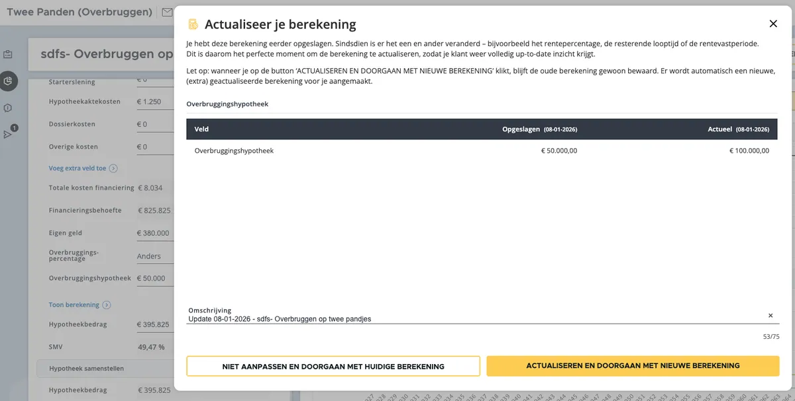
🐞 IT-29077: Overbruggingspercentage ANDERS niet meer zichtbaar bij actualiseren
Wanneer je de overbrugging handmatig aanpast, zie je in de actualiseren-modal voortaan alleen nog de juiste en relevante opties. Het overbruggingspercentage ANDERS wordt niet meer getoond, zodat je sneller en met meer vertrouwen kunt actualiseren zonder verwarring of onduidelijkheid.
🆕 IT-28920: Afgiftedatum energielabel nu eenvoudig te kiezen met een datepicker
Je selecteert de afgiftedatum van het energielabel voortaan via een handige datepicker in plaats van handmatige tekstinvoer. Zo voer je sneller en consistenter een datum in, verklein je de kans op invoerfouten en sluit het veld perfect aan op de look & feel van de andere datumvelden in eBlinqx Hypotheekadvies—terwijl alle bestaande energielabel-functionaliteit en validaties gewoon blijven werken.
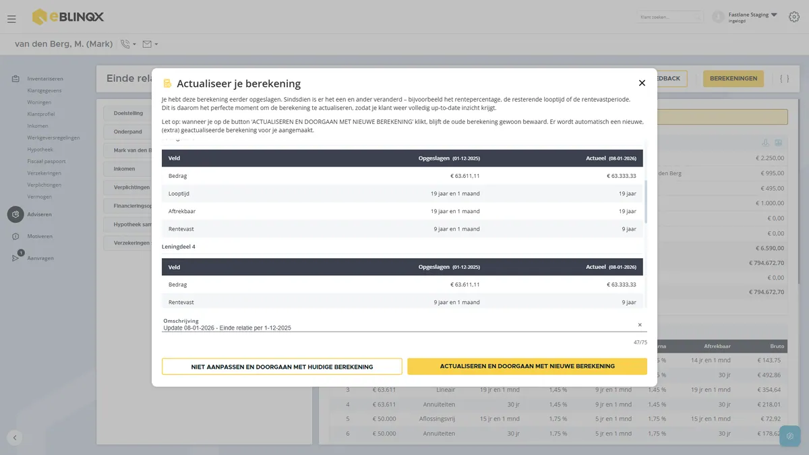
⚙️ IT-28858: Slimmere actualisatielogica houdt jouw berekening leidend
Vanaf nu vergelijkt eBlinqx Hypotheekadvies bij openen of actualiseren niet meer met de inventarisatie uit de database, maar met jouw meest recent opgeslagen berekening. Daardoor blijven door jou aangepaste hypotheekdelen netjes staan en springen bedragen niet meer terug naar oude waarden. De database-inventarisatie wordt alleen nog gebruikt bij het starten van een nieuwe berekening, terwijl eerdere berekeningen wél beschikbaar blijven als referentie. Ook blijft de bestaande actualiseer-logica voor “niet-rigoureuze” wijzigingen intact, zodat je nog steeds snel en veilig kunt actualiseren zonder extra handmatig herstelwerk.
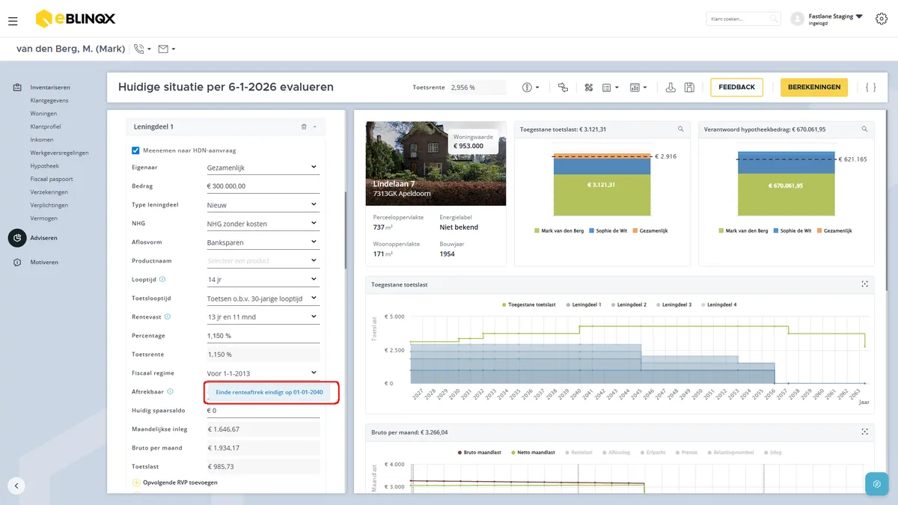
🐞 IT-29044: Correcte einddatum renteaftrek in het adviesrapport
De einddatum van de renteaftrek in het adviesrapport is nu volledig in lijn met de berekening in eBlinqx Hypotheekadvies. Hierdoor zie je altijd één duidelijke en correcte einddatum terug, zonder verschillen tussen de berekening en het rapport. Dat geeft je meer vertrouwen in je advies en voorkomt verwarring richting jouw klant.
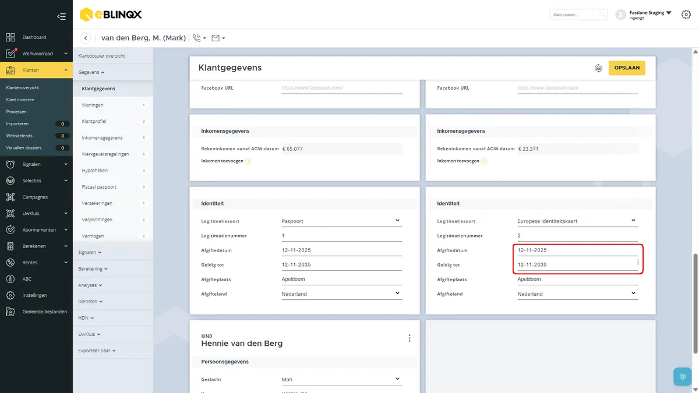
🐞 IT-27949: Geldigheidsduur identiteitskaart partner blijft correct opgeslagen
De geldigheidsduur van de Europese identiteitskaart van de partner wordt nu betrouwbaar opgeslagen. Wanneer je een afwijkende geldigheidsduur instelt, zoals 5 jaar, blijft deze netjes behouden bij het opnieuw openen van het dossier. Zo heb je altijd een correct en compleet klantdossier en voorkom je onnodige correcties tijdens controles.
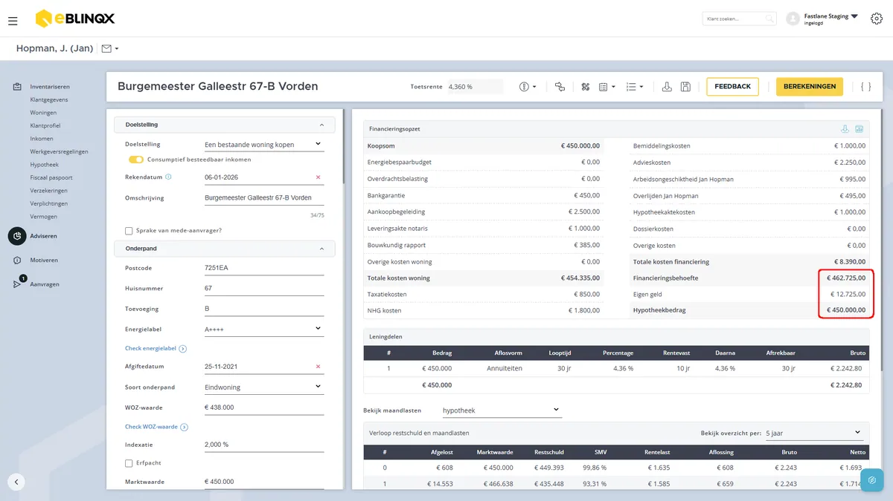
🐞 IT-28932: Betrouwbare berekening van financieringsbehoefte en totale kosten
Je ziet nu altijd netjes de totale kosten financiering en financieringsbehoefte terug in je berekening én in de output. Ook is de invoer van eigen middelen verbeterd, zodat ongeldige waarden niet meer kunnen leiden tot rare NaN-resultaten en jij zonder opnieuw te hoeven beginnen gewoon door kunt werken.
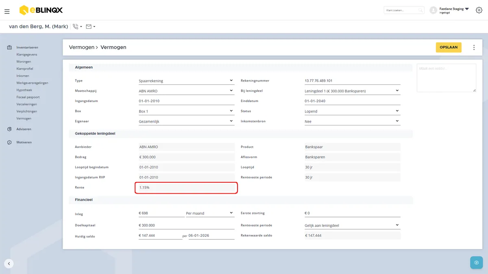
🐞 IT-28382: Correcte renteverwerking met decimalen bij bankspaarhypotheek
Bij de bankspaarhypotheek kun je nu rentepercentages voor het spaardeel invoeren en laten doorrekenen met twee decimalen, zoals 1,15%. De rente wordt niet langer afgerond naar hele procenten (2%), waardoor de maandelijkse inleg altijd exact en betrouwbaar wordt berekend. Dit geeft je meer nauwkeurigheid in je advies en voorkomt verwarring bij jou en je klant.
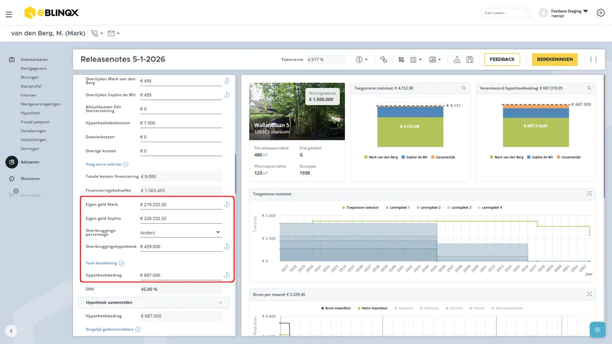
🐞 IT-28918: Betrouwbare doorrekening van eigen geld en overbrugging
De doorrekening van de benodigde hypotheek is nu weer volledig betrouwbaar bij het aanpassen van kosten en eigen middelen. Eigen geld wordt correct verdeeld over aanvrager en partner, de overbruggingshypotheek wordt automatisch en consistent ingevuld en blijft stabiel bij herberekenen of opnieuw laden. Hierdoor kloppen de totalen altijd en kun je zonder omwegen toewerken naar een definitief advies, met het vertrouwen dat alle bedragen logisch en transparant worden meegenomen.
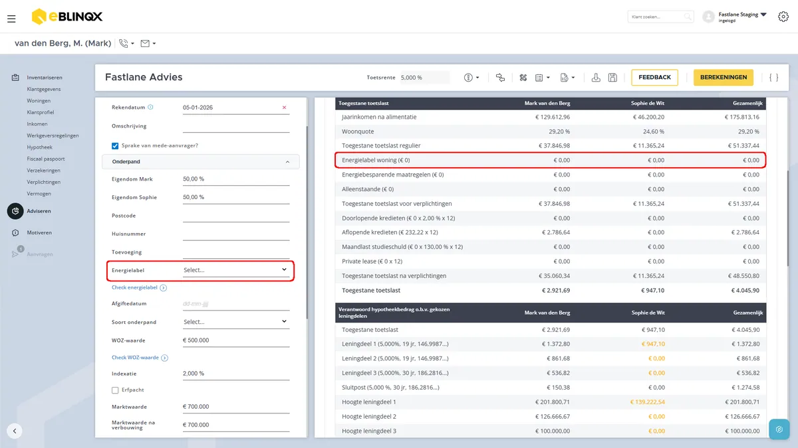
🐞 IT-28957: Betere standaardinstelling energielabel bij bestaande woning
Bij nieuwe berekeningen voor het kopen van een bestaande woning staat het energielabel nu standaard op Niet bekend. Zo voorkom je dat er onbedoeld extra leencapaciteit wordt meegenomen en weet je zeker dat de berekening aansluit bij de werkelijke situatie van jouw klant. Dat geeft meer zekerheid en een nog betrouwbaarder advies.
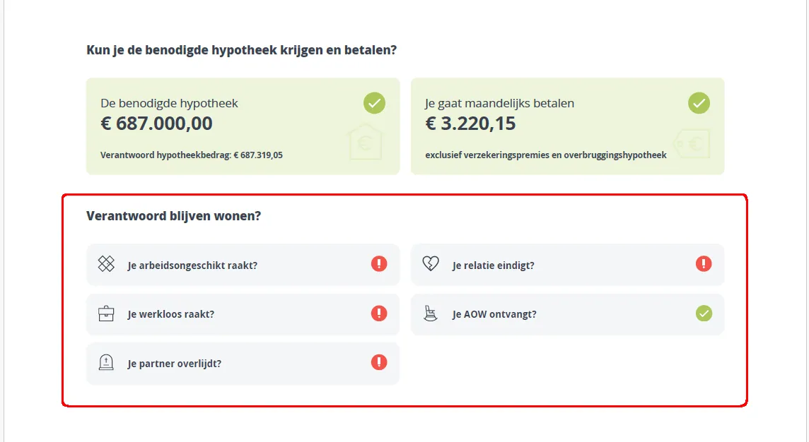
⚙️ IT-28941: Verbeterde layout van het thema ‘Verantwoord blijven wonen’
De adviessamenvatting is nu nog overzichtelijker. Alle life events binnen het thema Verantwoord blijven wonen passen netjes op één pagina, zodat je het complete thema in één oogopslag kunt bespreken met je klant. Dat leest prettiger en maakt je adviesgesprek nog professioneler.
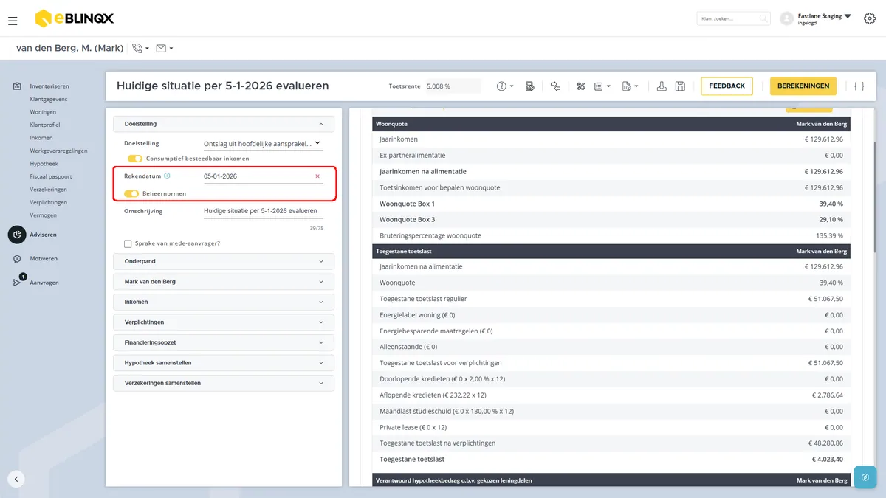
🐞 IT-28712: Financieringslasttabel Beheer 2026 toegepast
Je werkt nu automatisch met de door NHG gecorrigeerde Financieringslasttabel Beheer 2026. Hierdoor zijn alle berekeningen en validaties binnen beheerfunctionaliteiten weer volledig in lijn met de actuele NHG-voorwaarden. Dat geeft je betrouwbare toetsresultaten en extra zekerheid bij NHG-dossiers met ingangsdatum 2026, zodat je met vertrouwen kunt adviseren.
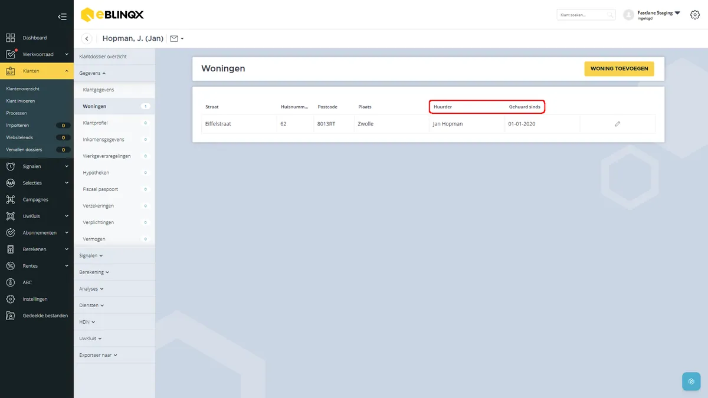
⚙️ IT-28872: Overzichtspagina 'Woningen' sluit nu perfect aan bij gehuurde woningen
Werk je met een woningtoepassing van het type Gehuurde woning? Dan zie je op de overzichtspagina 'Woningen' nu direct de juiste terminologie en gegevens. De kolommen zijn afgestemd op huren in plaats van eigendom, waarbij je duidelijk ziet wie de huurder is en sinds wanneer de woning wordt gehuurd. Dit zorgt voor een herkenbare en consistente weergave, waardoor je sneller overzicht hebt en prettiger werkt tijdens de inventarisatie.
🆕 IT-27489: Hypotheken samenvoegen in inventarisatie
Je kunt nu meerdere hypotheken eenvoudig samenvoegen tot één nieuwe (hoofd)hypotheek binnen de inventarisatie. Zo neem je deze gecombineerde hypotheek volledig mee in een nieuwe berekening, terwijl de bestaande hypotheken hun eigen status behouden. Dit geeft je meer overzicht en flexibiliteit bij het doorrekenen van complexe hypotheekstructuren en helpt je om jouw advies nog efficiënter en inzichtelijker te maken.
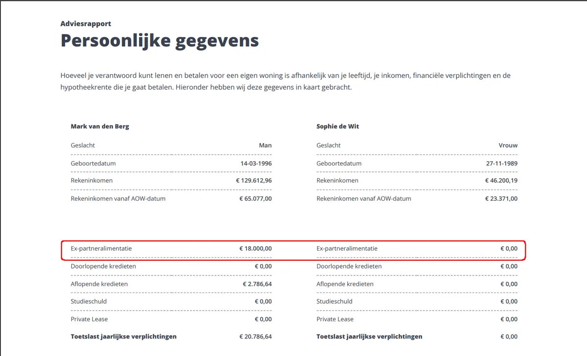
🐞 IT-28866: Correcte weergave van alimentatieverplichting in adviesrapport
In het adviesrapport zie je een alimentatieverplichting nu uitsluitend bij de aanvrager aan wie deze daadwerkelijk is gekoppeld. De mede-aanvrager wordt alleen nog getoond met verplichtingen die ook echt voor hem of haar gelden. Zo sluit het rapport altijd perfect aan op de vastgelegde inventarisatie en voorkom je verwarring bij klant of acceptant, terwijl de betrouwbare berekeningen ongewijzigd correct blijven.
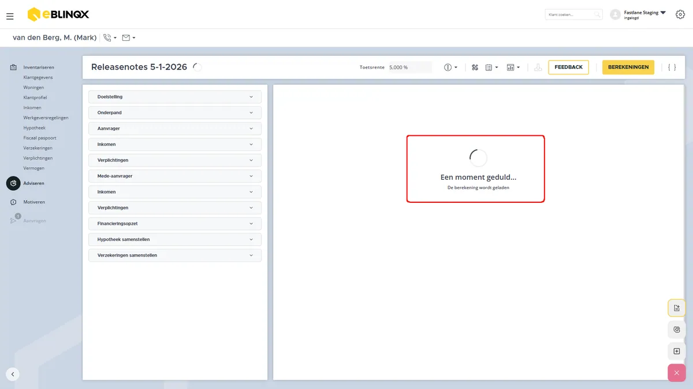
🐞 IT-28875: Duidelijke statusmelding bij openen bestaande berekening
Bij het openen van een bestaande berekening zie je nu een heldere, neutrale statusmelding terwijl eBlinqx Hypotheekadvies op de achtergrond de berekening en verzekeringspremies controleert en actualiseert. Onterechte rode foutmeldingen en notificaties zijn hiermee verdwenen, zodat je direct begrijpt wat er gebeurt en zonder twijfel verder kunt werken. Zo heb je altijd vertrouwen in een actuele en betrouwbare berekening, met rust en duidelijkheid voor jou en je klant.
🐞 IT-28702: Heldere terugkoppeling na melden van verbetering hypotheekvoorwaarden
Na het succesvol melden van een verbetering binnen Hypotheekvoorwaarden zie je nu alleen nog een duidelijke bevestiging dat je melding is ontvangen. De onterechte foutmelding is verdwenen, waardoor je direct zekerheid hebt dat jouw input goed is verwerkt. Dit zorgt voor meer vertrouwen en een prettige, soepele gebruikerservaring tijdens het doorgeven van verbeteringen.